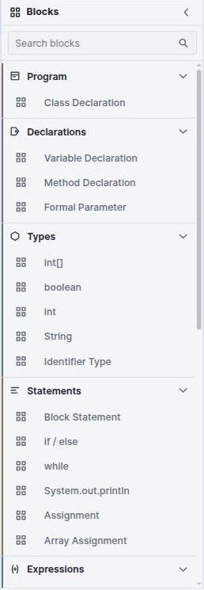

Thirty-four blocks, six categories
The toolbox is organised by MiniJava's grammar rather than by convenience, so the categories are the non-terminals. Once you notice that, finding a block becomes a question about the language rather than a question about the UI.
The toolbox

| Category | Blocks |
|---|---|
| Program | Class Declaration |
| Declarations | Variable Declaration · Method Declaration · Formal Parameter |
| Types | int[] · boolean · int ·
String · Identifier Type |
| Statements | Block Statement · if / else · while ·
System.out.println · Assignment · Array Assignment |
| Expressions | Arithmetic (+ − × ÷) · Compare
(< ≤ > ≥) · Logic (&& ||)
· Array Lookup · Array Length · charAt ·
concat · String Length · Method Call · Argument
Item · Not · Parenthesized |
| Values | Integer · String Literal · Boolean · Identifier ·
this · new int[] · new Object
|
A few of these are worth calling out because their names do not quite give them away:
- Identifier Type is a class type — how you say
Cell x;rather thanint x;. - Identifier (in Values) is a variable reference, as opposed to the name field on a declaration.
- Argument Item stacks under a Method Call, one per argument, rather than the call having a fixed number of sockets.
- Parenthesized only affects how generated source is bracketed.
- Block Statement is a braced group
{ … }, which matters wherever the grammar wants a single statement and you have several. charAt,concatand String Length are the String extension, not part of the original BNF.
The grammar-aware renderer
B-MJ uses a custom Blockly renderer called BMJ-Thrasos. It subclasses Blockly's Thrasos renderer and restores grammar-aware connector behaviour: the shape of each socket and plug tells you which non-terminal it is.
Blockly's own connection check metadata still does the enforcing — you cannot plug
a statement into an expression socket regardless of what things look like. What the custom shapes
add is that you can see the category before you try. Instead of dragging a block
over and discovering it will not connect, you can tell from across the workspace that a socket wants
an Expression and the thing in your hand is a Statement.
B-Lambda also has a custom renderer, Tude, but it is doing something else: Tude changes block geometry so terms read as nested text. BMJ-Thrasos changes connector shapes so grammatical categories are visible. Different problems — a λ-term has three constructs and no interesting grammar, while MiniJava has ten non-terminals and very little else going on visually.
Connector shapes
Ten horizontal connector shapes, one per MiniJava value / non-terminal position:
| Non-terminal | Appears as the socket for |
|---|---|
Goal |
The program root |
MainClass |
The single main class |
ClassDeclaration |
Each further class |
VarDeclaration |
Fields and locals |
MethodDeclaration |
Methods |
FormalParameter |
Parameters |
Type |
Every type position |
Statement |
Statement positions |
Expression |
Expression positions |
Identifier |
Name positions |
Vertical families
Five vertical connector families handle the places MiniJava has a sequence of something. These are the stacking connections — the notches on the top and bottom of a block:
- Class declarations
- Variable declarations
- Method declarations
- Statements
- Parameter and argument lists
Because each family is distinct, a statement cannot stack onto a parameter list even though both are “a list of things”. This is also why declarations and statements cannot be interleaved inside a method: they are different vertical families, connected to different sockets.
The grammar
B-MJ implements the CSE 401 MiniJava BNF, plus two additions:
- The String type and its three operators.
- The block editor's operator families — where the BNF has separate productions per operator, B-MJ has one block with a dropdown, which keeps the toolbox short without changing the language.
The base grammar is published by the University of Washington as BNF for MiniJava. The project mirrors it, and also keeps an “adjusted” version documenting exactly the grammar it implements — base BNF plus the two additions above.
Type checking and execution start from Goal and follow the connections. Blocks left
detached on the canvas are ignored — no diagnostics, no execution. Scratch space is
genuinely scratch, so you can park a half-built method next to the program while you work on
it.